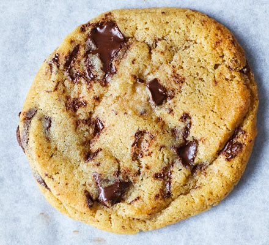

Chocolate Chip Cookies

Description
This is a simple recipe taken from the BBC for how to make chocolate chip cookies.
Ingredients
- 120g butter, softened
- 75g light brown sugar
- 75g golden caster sugar
- 1 medium egg
- 1 tsp vanilla extract
- 180g plain flour
- ½ tsp bicarbonate of soda
- 150g dark chocolate, cut into chunks
Steps:
- Heat oven to 180C/160C fan/gas 4.
- Line two baking sheets with parchment.
- Cream the butter and sugars together until very light and fluffy.
- Once combined, stir in the flour, bicarb, chocolate and ¼ tsp salt.
- beat in the egg and vanilla.
- Scoop 10 large tbsps of the mixture onto the trays, leaving enough space between each to allow for spreading.
- Bake for 10-12 mins or until firm at the edges but still soft in the middle – they will harden a little as they cool.
- Leave to cool on the tray for a few mins before eating warm, or transfer to a wire rack to cool completely. Will keep for three days in an airtight container.